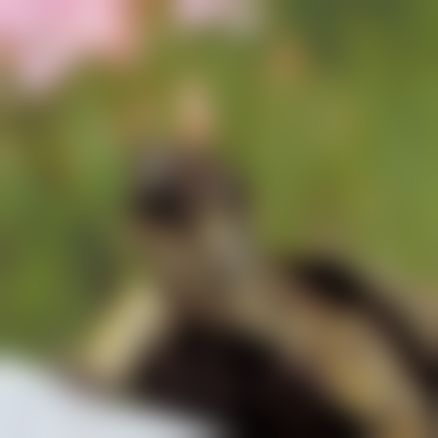

Reference imageUndistorted visual content

Blurred imagePerceptual degradation
01
Visual Quality Assessment
We develop perceptually aligned models that estimate the quality of images and videos as people experience them. This includes no-reference quality assessment, generative scanpath representations, and large multimodal models for image quality assessment.
Perceptual modeling · Image/video quality · LMM-based assessment